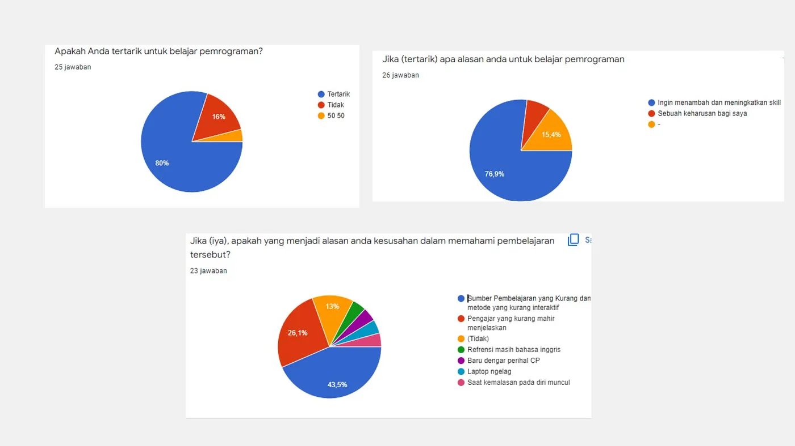

UX Strategy & Research
Based on the survey conducted with respondents, both from students within FILKOM (Faculty of Computer Science) and those outside FILKOM, many students are interested in learning programming languages to enhance their skills. Additionally, they face difficulties in learning due to the lack of interactive learning methods.